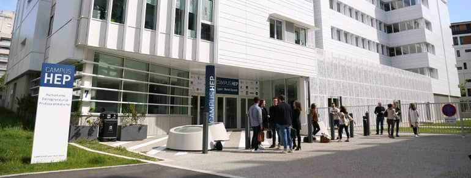

Ecole Informatique à Lyon

Depuis toujours la ville de Lyon a su s'attirer les faveurs des étudiants de tout l'hexagone. En 2020 , elle est même classée comme la deuxième ville étudiante pour la deuxième année. Cette ecole délivre des titres certifiés de l'Etat de niveau Bac à Bac+5 , enregistrés au Répertoire National des Certifications Professionnelles. Ces titres certifiés par France Compétences sont le plus haut niveau de reconnaissance pour un Etablissement d'Enseignement Supérieur Technique Privé. Ils sont aussi la garantie d'un travail pédagogique sérieux de nos enseignants.
L'ecole accompagne ses étudiants dans la recherche d'alternance. Elle dispose à cet effet d'un service dédié aux placements en entreprises : des ateliers de recherche d'emplois , de scéances de coaching , des jobs datings sont organisés pours garantir aux étudiants une meilleure chance de trouver une alternance.